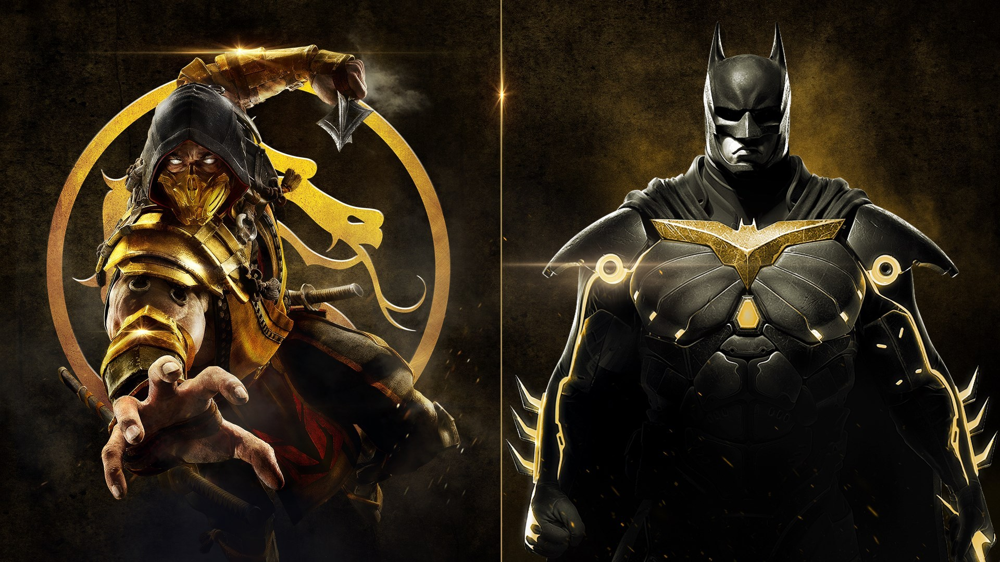

Street Fighter V
Bom para quem curte jogos de luta e, claro, os personagens da DC, Injustice 2 é a segunda edição do game que ficou famoso por colocar frente a frente heróis e vilões das histórias em quadrinho.
Figuras icônicas como Batman, Superman e Mulher Maravilha agora podem enfrentar novos personagens.
Como toda boa sequência, Injustice 2 tem gráficos e jogabilidade melhorados, além de um modo história bem bacana.